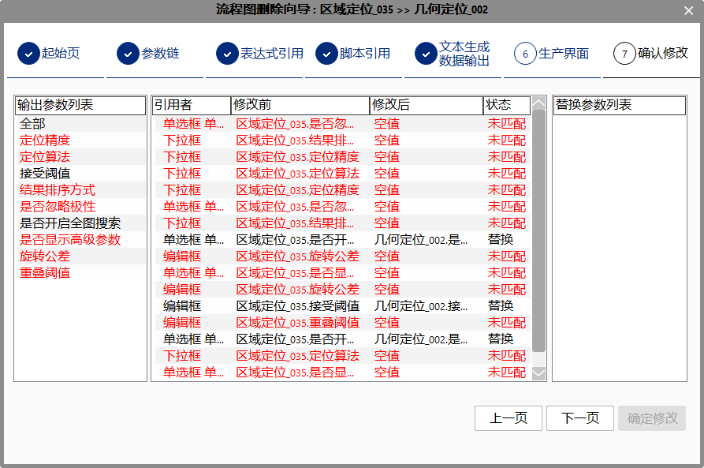

流程图删除向导是对原删除功能的拓展。
在删除图元（工具实例）的同时，删除或替换此工具被其他工具使用的所有引用/链接项。
如”图像文件 _ 001“的”输出图像“被链接到"灰度形态学工具 _ 002"的“输入图像”，作为其输入参数，删除“图像文件 _ 001”时，会调用“流程图删除向导”，"灰度形态学工具 _ 002"的“输入图像”可置为空或替换为其他(“图像文件 _ 001”)同类工具。
“流程图删除向导”覆盖的引用项包括：
当删除被其他工具的引用的工具图元时，会弹出”流程图删除向导“窗口，如下。
注意
选择多个图元，进行删除时，如果存在多个待删除的工具图元被其他工具引用的情况（除去删除工具的相互引用），将给出如下弹窗提示：
选择“是”，直接删除选择的多个工具
选择“否”，取消删除操作，软件右下角“查找窗口”给出提示，告知被引用的工具图元，后续需要手动逐个删除这些被引用的图元。
如果删除的多个工具中只存在一个工具被外部引用，那么会显示删除向导窗口，可使用直接删除或替换的方式删除此工具。
选择替换模式：直接删除或用其他工具替换引用
参数链链接置空或替换，未匹配参数将断开原参数链：
表达式引用置空或替换，一个表达式工具可能引用多个工具参数，如果存在未匹配参数，表达式将执行部分替换，即未匹配的引用参数不进行修改：

脚本工具引用置空或替换：与表达式工具类似，未匹配参数引用不修改：

文本生成工具和数据输出工具引用置空或替换，未匹配参数直接删除：
生产界面引用置空或替换，未匹配参数清空控件引用：

完成引用删除/替换操作，查看所有替换项：

在输出参数列表中选择某一输出参数（如图，选择“工具执行结果”），那么替换参数列表中会显示潜在的可替换参数项（如图），选择某一替换参数（下图中，选择“执行结果”），执行参数替换操作（表达式中原“区域定位_035.工具执行结果”替换为“几何定位__003.执行结果”）。
如果替换参数列表中无任何项，即无可替换参数，无法进行替换操作，需要后续手动处理。